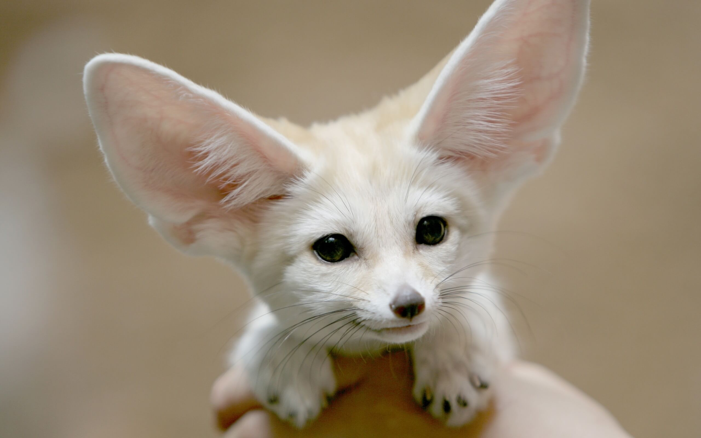

Jak wychować lisa
 Fenki mają łagodne usposobienie i łatwo je oswoić. Często spotykane są w hodowlach prywatnych. Najwięcej fenków mieszka na Saharze, w jej środkowej części.
Fenek śpi za dnia, w piasku Sahary. Kopie norki, a od nich kilka dróg ewakuacji. Ściany wzmacnia roślinami, piórami i sierścią. W norce nie mieszka sam, tylko z całą rodziną. Żeruje nocą. Poluje na chrząszcze, ptaki i jaszczurki, zjada też jaja. Rośliny są dla niego źródłem wody, bez której potrafi się obejść naprawdę długo. W norce nie mieszka sam, tylko z całą rodziną. Żeruje nocą. Poluje na chrząszcze, ptaki i jaszczurki, zjada też jaja. Rośliny są dla niego źródłem wody, bez której potrafi się obejść naprawdę długo. W norce nie mieszka sam, tylko z całą rodziną. Żeruje nocą. Poluje na chrząszcze, ptaki i jaszczurki, zjada też jaja. Rośliny są dla niego źródłem wody, bez której potrafi się obejść naprawdę długo.
Fenek pustynny (Vulpes zerda) to gatunek drapieżnego ssaka z rodziny psowatych (Canidae).
Występowanie
Występuje na suchych i pustynnych terenach Półwyspu Arabskiego i północnej Afryki. Będąc najmniejszym przedstawicielem rodziny psowatych, uchodzi za największego ssaka drapieżnego Sahary. Osiąga 30–40 cm długości, samce ważą ok. 1,5 kg, samice ok. 0,8 kg. Ma charakterystyczne, duże uszy, dorastające do 15 cm, dzięki którym ma dobry słuch i może efektywnie chłodzić ciało. Fenek jest zwierzęciem nocnym, sypia w podziemnych norach. Odżywia się szarańczakami, chrząszczami, poluje także na ptaki i gryzonie.
Rozmnażanie
Ruję odbywają zimą, ciąża trwa 50-55 dni, małe rodzą się w marcu lub kwietniu, 1-6 w miocie. Ważą po 25-28 g i mierzą 10 cm długości, z czego połowa przypada na ogon. Początkowo srebrzysto-czarne, po 2 tygodniach zmieniają ubarwienie futra na beżowe, a w wieku 3 miesięcy uzyskują puszysty długi ogon z czarnym końcem oraz gęste, długie i jasnobrązowe futro typowe dla osobników dorosłych. Żyją do 10 lat w warunkach naturalnych, a w niewoli do 12 lat.
Zachowanie
Fenki mają łagodne usposobienie i łatwo je oswoić. Często spotykane są w hodowlach prywatnych. Najwięcej fenków mieszka na Saharze, w jej środkowej części. Fenek śpi za dnia, w piasku Sahary. Kopie norki, a od nich kilka dróg ewakuacji. Ściany wzmacnia roślinami, piórami i sierścią. W norce nie mieszka sam, tylko z całą rodziną. Żeruje nocą. Poluje na chrząszcze, ptaki i jaszczurki, zjada też jaja. Rośliny są dla niego źródłem wody, bez której potrafi się obejść naprawdę długo.
Komentarze
Fenek Kowalski
Mój lis jest fajny
Fenek Kowalski
Dokładnie
Fenek Kowalski
Dokładnie dokładnie
Rudy Kowalski
Mój lis jest fajniejszy